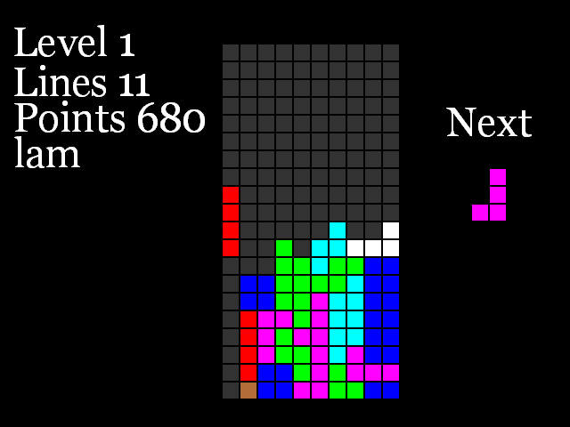

cletris
Description
cletris is a Tetris game
It is developed on Debian GNU/Linux . and licensed under a license Lisp Lesser GNU Public License .
Installation
cletris could be installed like this :
- Load libraries :
CL-USER> (require 'asdf) CL-USER> (require 'asdf-install)
- Install Cletris :
CL-USER> (asdf-install:install 'cletris)
- Start Cletris :
CL-USER> (cletris:cletris)
Keys
- s : Start a new game
- Left : Move the current block to the left
- Right : Move the current block to the right
- Up : Rotate the current block
- Down : Move the current block down
- Space : Move the current block all the way down.
- p : Pause game
- v : View score (when user not playing a game).
- q : Quit Cletris
Screenshots
-
0.2

News
Links
Team
List of developers :
Nicolas Lamirault - nicolas.lamirault@gmail.com
Mailing Lists
Mailing lists that have been established for this project :
Repository
NIL NIL
Releases
0.2 cletris-0.2
0.1 cletris-0.1